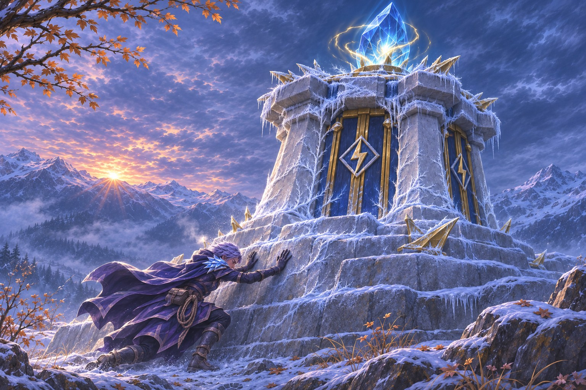

Wczytywanie opowieści…

OPOWIEŚĆ ZE ŚWIATA RIFTORYN ✦ NIVOREN · 11 ET
SAILA
Gdy wieża
zamilkła
Gdy alarm przerywa ciszę górskiego szlaku, Saila musi zdecydować, jak daleko się posunąć, by ochronić innych.
← Wcześniejsza opowieść SailyROZPOCZNIJ OPOWIEŚĆ ↓